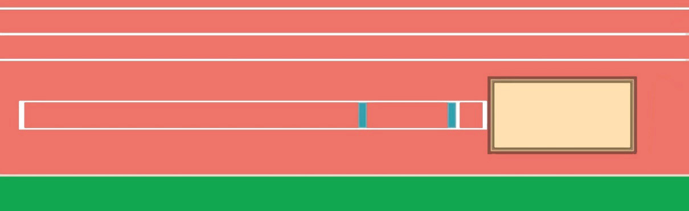

Jumping area
The triple jump area consists of a run-way, take-off board and landing area, Figure 2.26.
The runway
This is a space set for an athlete to prepare for jumping. The length and width of the runway are 40 m and 1.22 m respectively, and are marked with white lines which are 5 cm wide.
Take-off board
The take-off board is placed 13 m from the landing area. The distance between take-off board and the landing area ranges from 9 m to 13 m based on the age and gender of the athlete.
Landing area
The length and width of the landing area are 10 m and 2.74 m – 3.0 m respectively. The landing area is filled with soft damp sand.

Fundamental skills in triple jump
Mastery of triple jump skills enables athletes to achieve maximum jumping distance. The fundamental skills for performing triple jump are the approach run, take-off, three successive jumps, flight and landing. These skills are usually expressed as triple jump phases.
The approach run
The main objective of the approach run is to create the greatest amount of speed for successful jump. The optimal run-up distance and speed depend on the athlete’s strength and technique. Use the following steps for executing the approach run: